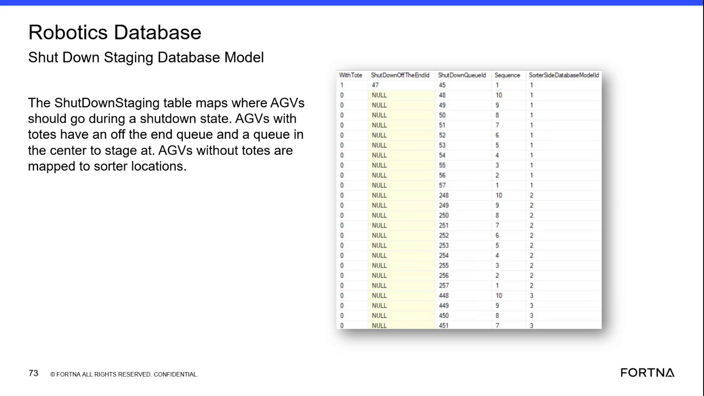

| Procedure ID | proc_diagnose_sorter_location_queue_mapping_in_robotics_database_v1 |
|---|---|
| Title | Diagnose Sorter Location and Queue Mapping in the Robotics Database |
| Procedure Type | diagnostic |
| Primary Role | L2_support |
| Support Safe | Yes |
| Capability Tags | zone_config_state |
| Access Surface | wcs_sql |
| Audience Roles | L2_support, L3_support |
| Failure Pattern Tags | mapping_abnormal, zone_agv_mismatch |
| Validation Status | needs_sme_review |
| Merge Status | source_finalized |
Use read-only SSMS access to the WCS / Helix Robotics database to verify sorted-location rows, associated queue locations, sorter-side associations, and sorter-entry sequence when investigating sorter mapping behavior.
Use this diagnostic on the WCS / Helix DB (SSMS) when support needs to verify sorter-side, sorted-location, queue-location, or sorter-entry sequence configuration associated with an observed sorter mapping issue.


Responsible role: L2_support
Instruction:
In the WCS / Helix DB (SSMS), open the Robotics database and locate the SortLocationsDatabaseModel table/model. Do not edit rows or database configuration.
Expected result:
The Robotics database exposes the sort-location model for read-only inspection.
Stop or Escalate If:
Responsible role: L2_support
Instruction:
In the WCS / Helix DB (SSMS), review the relevant SortLocationsDatabaseModel rows. Inspect the sorted-location identifier and its associated queue-location identifier; where present, use the model fields SorterId, StagingId, and QueueId to distinguish the sorter location, staging location, and queue location.
Expected result:
The affected sorted locations and their associated queue locations are visible as rows that can be compared with the observed sorter configuration.
Stop or Escalate If:
Responsible role: L2_support
Instruction:
In the WCS / Helix DB (SSMS), inspect the sorter-side association and Sequence for each relevant row. Compare the recorded sequence with the observed sorter entrance queue order. Sequence values are used to order the locations from the sorter entrance queue; the supplied model reference describes sequence values 1–4 as starting at that entrance queue.
Expected result:
Each relevant location has a sorter-side association and a sequence that can be compared to its expected position from the sorter entrance queue.
Stop or Escalate If:
Responsible role: L2_support
Instruction:
In the WCS / Helix DB (SSMS), verify that all locations and queue associations needed for the affected sorter side are present and that their sorter-side and Sequence values remain consistent with the observed sorter entrance queue order. Keep the inspection read-only.
Expected result:
The affected sorter side has a complete, internally consistent set of sorted-location and queue-location mappings.
Stop or Escalate If: